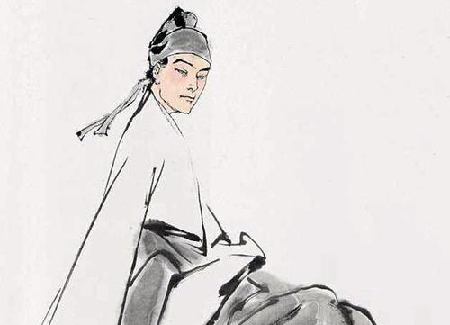

李贺
李贺（790～816） ，字长吉。河南府福昌县昌谷乡（今河南省宜阳县）人， 祖籍陇西郡。唐朝中期浪漫主义诗人， 与诗仙李白、李商隐称为“唐代三李”，后世称李昌谷。
宗室王孙
李贺远祖是唐高祖李渊的叔父李亮（大郑王），属于大唐宗室的远支，武则天执政时大量杀戮高祖子孙，到李贺父亲李晋肃时，早已世远名微，家道中落，隐沦昌谷。李贺对自己有李唐宗室高贵血统这一点十分自豪，在他的降里一再提起：“唐诸王孙李长吉”、“宗孙不调为谁怜”、“为谒皇孙请曹植”。但实际上，他这个“宗室王孙”恐怕连大郑王房的嫡脉也不是，至少是家道早就衰落了。
主要评价
- 《旧唐书》：手笔敏捷，尤长于歌篇。其文思体势，如崇岩峭壁，万仞崛起，当时文士从而效之，无能仿佛者。其乐府词数十篇，至于云韶乐工，无不讽诵>《旧唐书》：手笔敏捷，尤长于歌篇。其文思体势，如崇岩峭壁，万仞崛起，当时文士从而效之，无能仿佛者。其乐府词数十篇，至于云韶乐工，无不讽诵>《旧唐书》：手笔敏捷，尤长于歌篇。其文思体势，如崇岩峭壁，万仞崛起，当时文士从而效之，无能仿佛者。其乐府词数十篇，至于云韶乐工，无不讽诵
- 《新唐书》：李贺七岁能辞章，韩愈、皇甫湜始闻未信，过其家，使贺赋诗，援笔辄就如素构，自目曰高轩过，二人大惊，自是有名。为人纤瘦，通眉，长指爪，能疾书。未始先立题然后为诗，如他人牵合课程者。辞尚奇诡，所得皆警迈，绝去翰墨畦径，当时无能效者。乐府数十篇，云韶诸工皆合之弦管。贺亦早逝，故其诗歌世传者鲜焉。
- 杜牧《李长吉歌诗叙》赞之为“骚之苗裔。”
- 杜牧含蓄地说：“贺能探寻前事，所以深叹恨古今未尝道者，如《金铜仙人辞汉歌》《还自会稽歌》，求取情状，离绝远去笔墨畦径间，亦殊不能知之。”
- 王夫之《唐诗评选》：长吉于讽刺，直以声情动今古”，“真与供奉（李白）为敌。”
- 毛先舒《诗辨坻》：大历以后，解乐府遗法者，惟李贺一人。设色浓妙。而词旨多寓篇外。刻于撰语，浑于用意。”
- 黎二樵《黄陶评本<李长吉集>》：“细读长吉诗，下笔从无庸俗之病。” [10]
- 薛雪《一瓢诗话》：“唐人乐府，首推李、杜，而李奉礼、温助教（即温庭筠），尤益另炷瓣香。”
- 沈德潜《唐诗别裁集》：“依约楚辞，而意取幽奥，辞取环奇。”高棅称他为“天纵奇才”（《唐诗品汇》）；姚文燮以为他“力挽颓风”（《昌谷集注凡例》）；
- 黎简：论长吉每道是鬼才，而其为仙语，乃李白所不及”。
- 钱钟书：长吉穿幽入仄，惨淡经营，都在修辞设色，举凡谋篇命意，均落第二义。”
- 鲁迅“年轻时较爱读唐朝李贺的诗”，在他手书古人的诗文中，李贺是最多的一位。
- 毛泽东：陈毅元帅探讨诗词时也曾说：“李贺的诗很值得一读？”
- 王进玉：被称为“诗鬼”的李贺，26岁就离开了人间，但并不影响其长吉体诗歌在文学史上的地位。《旧唐书》：手笔敏捷，尤长于歌篇。其文思体势，如崇岩峭壁，万仞崛起，当时文士从而效之，无能仿佛者。其乐府词数十篇，至于云韶乐工，无不讽诵>
主要作品
| ① |
隐射抨击永贞宫变的，如《汉唐姬饮酒歌》； |
| ② |
批判唐宪宗沉湎迷信、追求长生的，如《仙人》《昆仑使者》《神弦》《苦昼短》《官街鼓》； |
| ③ |
拥护中央集权、反对藩镇割据的，如《秦王饮酒》《雁门太守行》《古邺城童子谣效王粲刺曹操》《上之回》； |
| ④ |
揭露藩镇祸国殃民的，如《猛虎行》《公出无门》； |
| ⑤ |
反映权贵骄奢淫逸、好景不常的，如《荣华乐》《秦宫诗》《牡丹种曲》《夜饮朝眠曲》《贵公子夜阑曲》《嘲少年》《梁台古愁》； |
| ⑥ |
讽刺宦官专权、乱政无能的，如《吕将军歌》《感讽五首》（其二）《感讽六首》（其二、四）；⑦反映边塞敌人侵扰、抗敌士兵艰苦生活的，如《摩多楼子》； |
| ⑧ |
揭露统治阶级剥削压迫的，如《老夫采玉歌》《感讽五首》（其一）； |
| ⑨ |
同情妃嫔悲苦生活的，如《宫娃歌》《堂堂》； |
| ⑩ |
反映少数民族军事活动的，如《黄家洞》 |
照片
